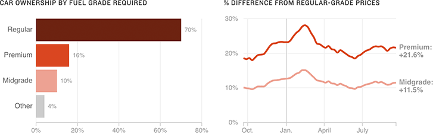

Most Drivers Don’t Need To Pay For Premium
Of people who own cars that require regular-grade fuel, 11 percent upgraded to premium-grade fuel at least once in the past 12 weeks, according to an AAA survey. A new report argues that this wastes drivers’ money and does not improve a car’s performance.
